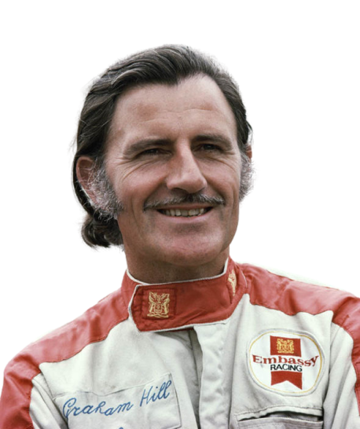

Lewis Hamilton
Lewis Hamilton
 Michael Schumacher
Michael Schumacher
 Juan Manuel Fangio
Juan Manuel Fangio Alain Prost
Alain Prost Sebastian Vettel
Sebastian Vettel
 Jack Brabham
Jack Brabham
 Jackie Stewart
Jackie Stewart
 Fernando Alonso
Fernando Alonso
 Graham Hill
Graham Hill Kimi Räikkönen
Kimi Räikkönen
|  | |
|---|---|
| Nationality | British |
| Date of Birth | 15 February 1929 - 29 November 1975 (aged 46) |
| Place of Birth | Hampstead, London, England |
| Teams | Lotus, BRM, Brabham, Hill |
| Height | Unknown |
| Debut | 1958 Monaco Grand Prix(Lotus) |
| Championship | 1962, 1968 (2) |
| First Win | 1962 Dutch Grand Prix(BRM) |
| Car Number | 1-3-9-11-28-66(ma trk r2m smallah) |
| Wins | 14 |
| Podiums | 36 |
| Pole Positions | 13 |
| Front Row Starts | 31 |
| Fastest Laps | 10 |
| Grands Prix Entered | 177 |
| Points | 59 |
Norman Graham Hill
Sir Damon Hill was a British racing driver and team owner. He was the Formula One World Champion twice, winning in 1962 and 1968. Hill is celebrated for being the only driver ever to win the Triple Crown of Motorsport. The achievement is today most commonly defined as including the Monaco Grand Prix.
Wins in the most prestigious races of all three of the major disciplines of motor racing cemented Hill's position as one of the most complete drivers in the history of the sport. Hill was also a well liked television personality and was frequently seen on television screens in the 1970s in a non-sporting capacity, appearing on a variety of programmes including panel games.
Upon leaving Brabham, Hill set up his own team in 1973, operating under the name Embassy Hill. Hill continued to race, however after failing to qualify for the 1975 Monaco Grand Prix he retired from driving to concentrate on the day-to-day operations of the team. That same year Hill and five other members of the Embassy Hill team were killed when the aeroplane Hill was piloting from France crashed in fog at night on Arkley golf course while attempting to land at Elstree Airfield in north London.
Hill and his son Damon were the first father and son pair to win Formula One World Championships. Hill's grandson Josh, Damon's son, also raced his way through the ranks until he retired from Formula Three in 2013 at the age of 22.
The Gentleman Racer
Instantly recognizable the world over for his achievements behind the wheel, it was another form of motorsport that first got the Gentleman racer hooked. An early love of motocross would be the medium that sparked a love of internal combustion engines and racing. Surprisingly for someone who would go on to win the most prestigious motorsport events around the world, Hill only passed his driving test at the age of 24. In an age where karting marks the first step towards Formula 1, many of today's drivers starting from as young as 6 years old, Hill would have been positively middle-aged. Perhaps Hill's later start shaped his ever-popular personality?